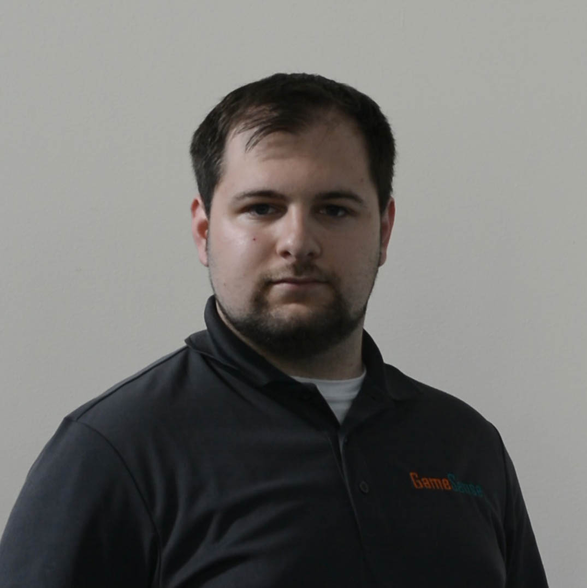
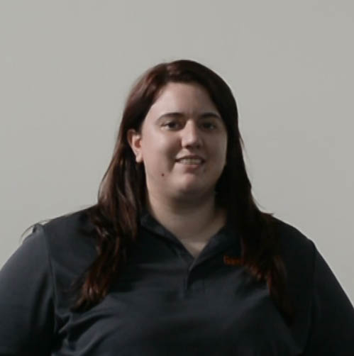
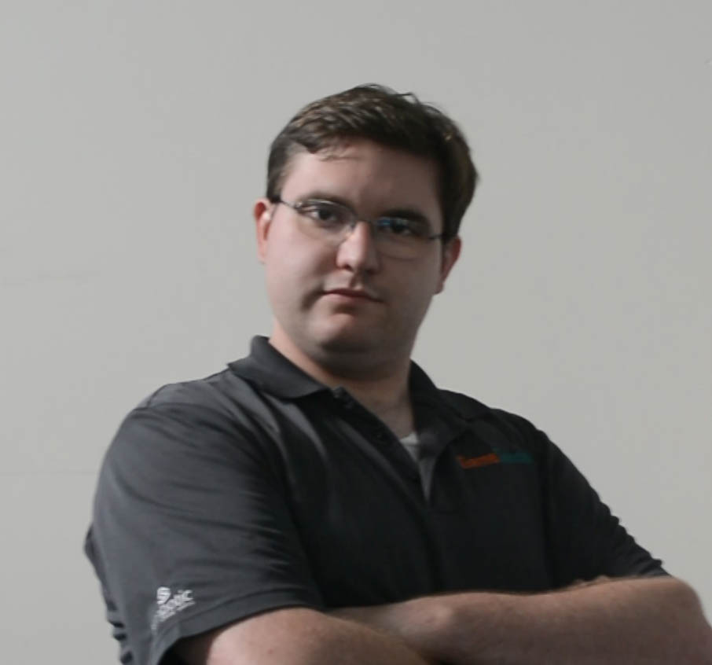
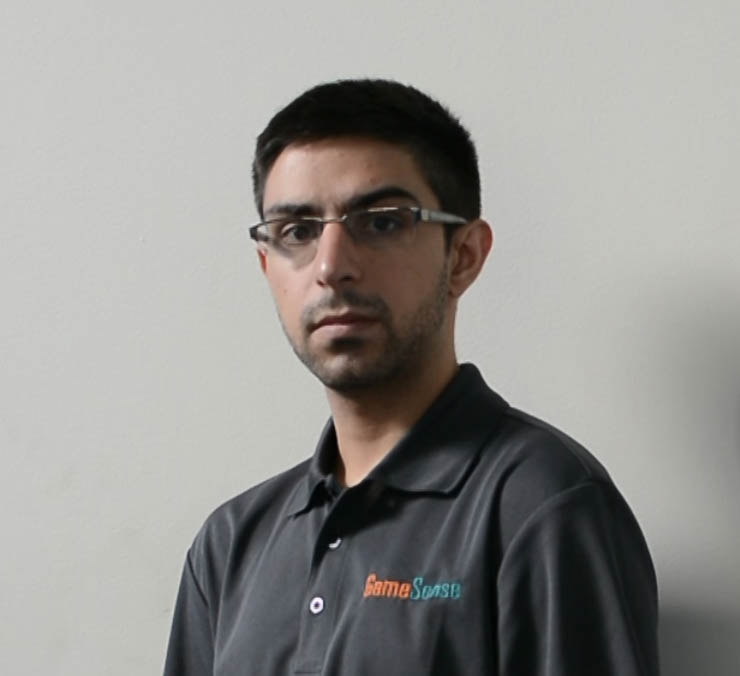
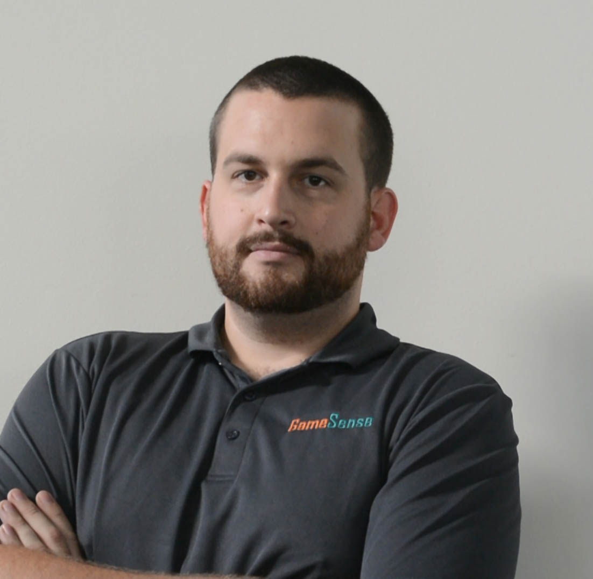

What is FIRST Robotics?
For Inspiration and Recognition of Science and Technology (FIRST) is a non-profit organization that aims to inspire students to pursue STEM (science, technology, engineering and math) careers. It achieves this goal by challenging students to participate in a rigorous robotics competition each year that partners them with industry professionals as mentors. For more information about the FIRST robotics program or the FIRST Robotics Competition (FRC), check out the links below!
FRC Resources
Below are some links to good resources for information and products related to FIRST Robotics.
GameSense Production Crew Bios
Evan Morrison - Co-host, Guest Coordinator, A/V Support
Evan joined FRC Team 971 for the 2005 season as a junior, and was elected Team President as a senior in 2006 He has continued to mentor 971 from afar since graduating high school, while mentoring FRC 190 from 2007-2010, attending WPI and earning a degree in Mechanical Engineering. He continued to mentor 190 for the 2011 season before leaving Massachusetts to pursue a Master’s degree from Purdue. After graduating, Evan took a full time job as a Mechanical Engineer at Boeing in Seattle, and began mentoring FRC 1983 in 2014. In addition to his mentoring roles, he has helped run video production at the WPI BattleCry offseason event, and worked closely with FIRSTWA to assemble and run the A/V system for the first year of PNW districts.
Stephanie Morrison - Co-host, Technical Director, Technical Support
Stephanie was a founding member of FRC Team 1983 Skunk Works Robotics in 2007 as a junior in high school. Upon graduating she received the WPI/FIRST Allaire Scholarship to Worcester Polytechnic Institute (WPI), where she joined FRC Team 190 as a mentor. In 2012 she graduated from WPI with a Bachelor of Science in Mechanical Engineering and concentrations in robotics and mechanical design. After graduating, Stephanie spent a year in Connecticut working for Pratt & Whitney as a Mechanical Design Engineer, before moving back to Seattle. For the 2014 season, she happily rejoined FRC 1983 as a mentor, and also was employed to run two brand new FTC teams at her alma mater, Raisbeck Aviation High School. Steph’s favorite areas in FIRST are mechanical design, controls, and strategy.
Francis O'Rourke - Co-host, Social Media
Francis participated in FIRST as a high school student from 2003 to 2006 on team 134 from Pembroke, NH and team 40 from Manchester, NH. He began mentoring team 190 from Worcester, MA in 2006, and has been with them since. Francis works as a Technical Writer, specializing in robotics and manufacturing documentation. His FIRST specialties are in scouting, strategy, and manufacturing.
Navid Shafa - Statistician, Website Developer
Navid participated in FVC/FTC in 2007/2008 and FRC from 2008-2011. As a mentor, he primarily works with Design/Mechanical and shifts to Scouting/Strategy during the competition season. Navid is also a big water-jet geek and often machines a slew of parts for the robot. He currently works with Washington FIRST Robotics, and will be coaching an FLL team this year, on top of mentoring Skunk Works.
Ty Tremblay - Co-host, Software Support
Ty joined 319 in 2004 as a freshman in high school. Through FIRST, he learned of Worcester Polytechnic Institute (WPI) and their Robotics Engineering program. While at WPI from 2008 to 2011 he was a mentor on team 190, where he was elected Director of Operations in 2009. After graduating with a MS in Robotics Engineering, Ty is back with his high school team, 319 out of Alton, NH while working as a Manufacturing Engineer at Symbotic. His favorite areas in FIRST are mechanical design, software development, and strategy.
GameSense
The GameSense show discusses strategy and gameplay of the current FRC game.
Behind The Lines
Behind The Lines is a show that aims to bring expert advice about FRC to the robotics community, and provide an avenue for live Q&A interaction.